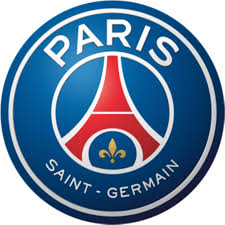

PSG

Paris Saint-Germain Football Club commonly known as Paris Saint-Germain, Paris SG, or simply PSG, is a French professional football club based in the city of Paris.
Founded in 1970, the club has traditionally worn kit colours in Red-and-Blue. The team has played its home matches in the 47,929-capacity Parc des Princes in the 16th arrondissement of Paris since 1974 The club plays in the highest tier of French football, the Ligue 1.
Paris Saint-Germain established itself as a major force in France, and one of the majors forces of the European football in recent years. PSG has won a total of 33 trophies, making it the most successful French club in history by this measure. PSG is also the only club to have never been relegated from Ligue 1, one of only two French clubs to have won a major European title, the most popular football club in France and one of the most widely supported teams in the world.
Domestically, the Parisians hold many records, having won six Ligue 1 titles, including four back-to-back, as well as a record eleven Coupe de France, a record seven Coupe de la Ligue, and a record seven Trophée des Champions titles. The club has also won one Ligue 2 title. Moreover, the Red-and-Blues have a long-standing rivalry with Olympique de Marseille. The duo contest French football's most notorious match, known as Le Classique. In European and worldwide football, they have won one UEFA Cup Winners' Cup and one UEFA Intertoto Cup.